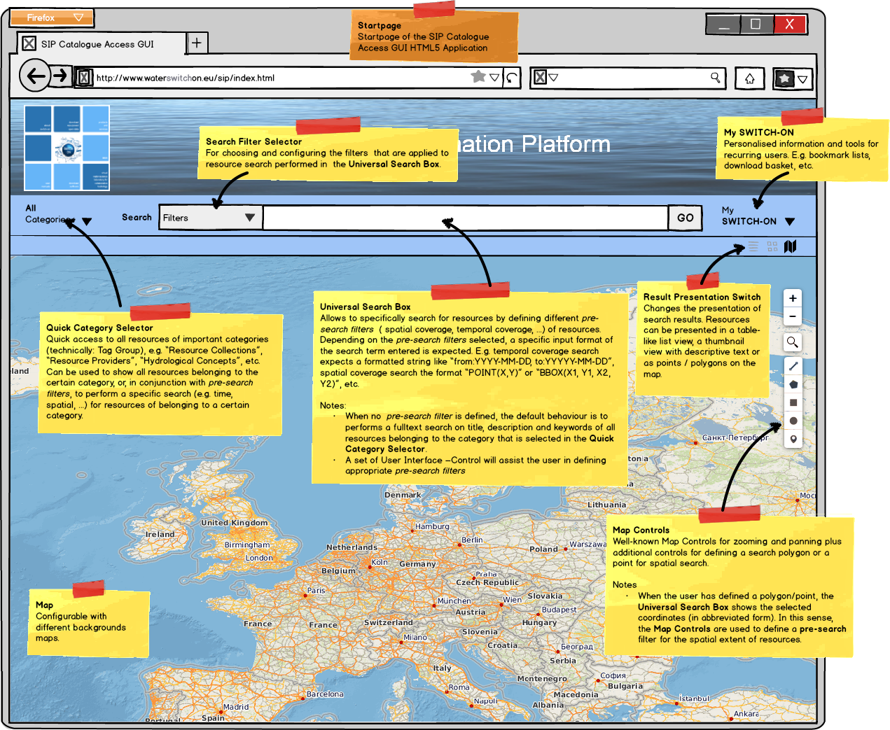

sip-html5 project website on github.io
This is the SIP Published Catalogue Access GUI Prototype of the Spatial Information Platform (SIP) of the SWITCH-ON EU FP7 collaborative project.

External users have two possibilities for interacting with the SIP. Either they use their own third-party software which must be able to interface with the Published Catalogue Access and Data Access APIs (demo video), or they make use of the clients provided by the SWITCH-ON Project. Those are the Published Catalogue GUIs of the SIP. These web-based Internet applications provide easy access to water-related open-data, the Virtual Water Science Laboratory and customised Products and Services and thus are the entry points for external users to results of the SWITCH-ON project. Standard web technologies like HTML5 and JavaScript are used for their implementation so users only need a web browser to access these GUIs. The Published Catalogue GUI is currently under development, a public demonstrator is not yet available. However, concepts and mockups can already be shown.
The Published Catalogue Access GUI is not meant to completely replace the more powerful SIP Expert Catalogue and Data Management GUI. While the Expert GUI provides advanced features for Publishers of Open Data and administrators who need write access to the SIP's Meta-Data Catalogue, the Published GUI is mainly useful for scientists that want to find and use Open Data resources.
In contrast to the SIP Expert Catalogue and Data Management GUI which is based on Java and thus requires a Java Plugin on the client, Published Catalogue Access GUI is entirely based on modern web technologies like HTML5, AJAX and REST. Thus, the Published Catalogue Access GUI is implemented as Rich Internet Application which can be run in current web browsers without the need to install additional software on the client. The AngularJS JavaScript Framework for Single Page Applications is used for the development of the new client.
The following mockups and core use cases are the basis for the development of the Published Catalogue Access GUI.
Please report any problems or bugs related to the SIP Expert Catalogue and Data Management GUI by using the GitHub Issue Tracker.